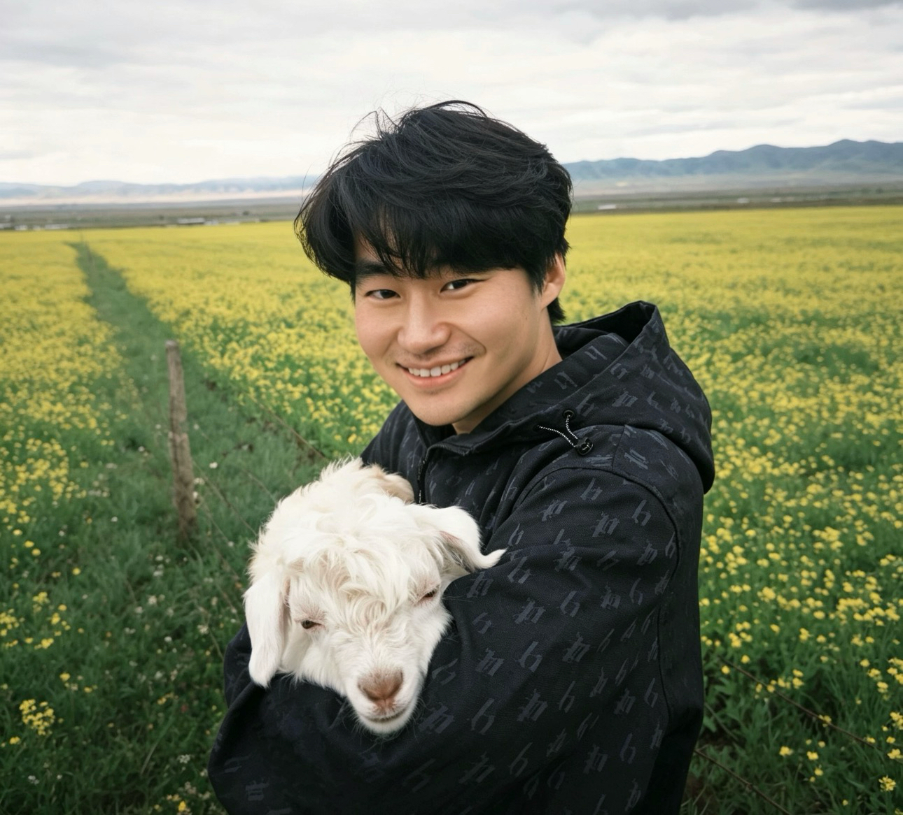

胡杨
Yang Hu / jʌŋ: hu /
人机交互（HCC）博士候选人 / 游戏引擎开发 / 游戏设计师
我是 Clemson University（克莱姆森大学）计算机学院 CUGAME Lab 的博士候选人及研究助理，导师为 Dr. Guo Freeman。
在加入 Clemson 之前，我在 Northeastern University（东北大学，波士顿，美国）获得游戏科学与设计（Game Science and Design）硕士学位，并在 University of Arizona（亚利桑那大学，图森，美国）获得计算机科学学士学位。我的技术背景涵盖多个交互技术领域，包括游戏引擎开发（如从零搭建自定义 2D 和 3D 游戏引擎）、VR 系统（如基于 Unity 的 VR 应用开发）、眼动追踪（如桌面端与 VR 平台上的眼动追踪硬件与软件），以及数字制造（如 Arduino、3D 打印和激光切割等快速原型技术）。
我的研究探索新兴技术如何重塑人们当下的数字体验。我关注各类新兴平台与交互系统（如虚拟现实、在线直播和人工智能系统）如何拓宽人们连接、创造与娱乐的方式。我的工作致力于理解并设计能够弥合技术鸿沟、增强人际连接、丰富参与方式的媒介体验（Mediated Experience）。
例如，我目前正在研究以下问题：
(1) 跨现实系统（Cross-Reality Systems）如何解决 “VR 孤立”（VR isolation）问题————即 VR 用户常常与常见的数字体验（如实用2D 屏幕的非VR用户）以及现实体验（如同处一室的朋友）产生社交脱节的现象。我研究如何设计新颖的 VR 界面与交互方式，将 VR 环境与日常的 2D 技术（智能手机、平板、台式机）及其用户连接起来，使没有专用 VR 硬件的人也能与 VR 用户进行有意义的互动和连接。
(2) VR 的空间计算环境（Spatial Computing）如何应对基于 2D 屏幕的 “注意力垄断”（attention monopolization）问题————即传统软件通过优先争夺独占注意力与延长用户使用时长的设计，在有限的显示空间（如手机屏幕）中相互竞争的现象。我研究 VR 的体积化显示空间如何拓展软件界面的设计范式，突破传统指标，从而促成更健康，多样的数字体验。
(3) 交互式、与游戏深度融合的直播如何应对 “游戏启动焦虑”（gaming initiation anxiety）问题————即玩家尽管有空闲时间，却因达到最佳游戏状态（如进入“心流”）所需的心理投入而迟迟不愿开始游戏的现象。我探索直播平台如何演变，最终模糊“观看”与“游玩”之间的传统边界，创造一种既能保持高参与度与互动性、又降低心理投入门槛的新型媒介体验。
我最喜欢的电子游戏是 泰拉瑞亚。
最新动态
我的合著论文荣获 FAccT 2026 最佳论文荣誉提名奖（Best Paper Honorable Mention Award）！
前往西班牙巴塞罗那参加 CHI 2026，展示我的第一作者及合著论文。
前往葡萄牙丰沙尔参加 DIS 2025，展示我的第一作者论文。
前往日本横滨参加 CHI 2025，展示我的第一作者论文。
我人生中第一篇第一作者长论文被 CHI 2025 录用。
专业服务
设计主席（Design Chair），ACM CSCW 2026
宣传 / 社交媒体联合主席（Publicity / Social Media Co-Chairs），ACM GROUP 2025
客座讲座 / 特邀报告
“Unity 与现代游戏引擎入门” - CPSC 4820/6820 游戏设计（Clemson University）| [幻灯片]